- 您好，我的名字叫陳正倫，現居台中市南屯區。
- 役畢踏入職場至今已有十年的工作經驗，在這幾年間，都秉持著盡全力完成公司交辦的
工作，並因應公司產能需求配合加班。過去幾年，我都在自動化控制領域發展，對於編
寫PLC程式，以及邏輯思考方面都有極高的熱忱。
- 上一份工作是在精密科學園區擔任助理工程師，因工作需求，接觸到編寫軟體程式的領
域，對其十分感興趣，考慮到未來全球將走向全面電腦自動化，毅然決然投入這個專業
的領域。
- 因此，前往中區資策會學習全端程式設計，從手刻HTML5、CSS前端RWD網頁開始學習、
到使用套件Bootstrap快速切版，到之後利用JavaScript以及JQuery增添網頁的互動
功能，包含drop拖拉事件判斷、碰撞判斷、scroll捲軸滑動、購物車、以setInterval
計時器製作清單輪播、倒數計時器等功能，也學會使用ES6的新寫法，以及Mysql資料庫
增修刪查的基礎語法，目前正努力學習後端 Java程式，除了資策會的課程，課後也積極
瀏覽更多線上課程。
- 這段時間以來，一步步累積作品精實自己的能力的過程中，更加確定程式開發是我喜愛的
工作，我願意全心投入，期望未來我能製作出更多作品，並成為具備獨立開發能力的軟體
工程師。
Skill
前端開發
- Html5
- Css
- Bootstrap
- JavaScript
- JQuery
- javascriptES6
- Git
其他
- Visual Studio Code
- Sublime
- Adobe Photoshop
- Adobe Animate
- AutoCAD
- PLC
Education
- 高雄市立中正高中 ─ 1998 年 9 月 - 2001 年 6 月
- 國立台灣體育學院 ─ 休閒運動學系，2001 年 9 月 - 2005 年 6 月
- 資策會中區訓練中心 ─ 全端程式設計師養成班，2019 年 10 月 - 2020 年 5 月
Collection
- 以下為踏入前端領域至今的相關作品
- 全數使用HTML、CSS純手刻切版，唯一後台網站使用Bootstrap快速套版製作，應用JavaScript
與JQuery編寫判斷及執行函式，並加入ES6寫法，其中包含drop拖拉事件判斷、碰撞判斷、
scroll捲軸滑動、購物車、以setInterval計時器製作清單輪播、倒數計時器等功能。
- 女裝購物網
- 純手刻RWD響應式網頁。
- 使用JavaScript製作購物車功能，可將商品加入購物清單、刪除清單商品、顯示清單總數、總金額等功能。
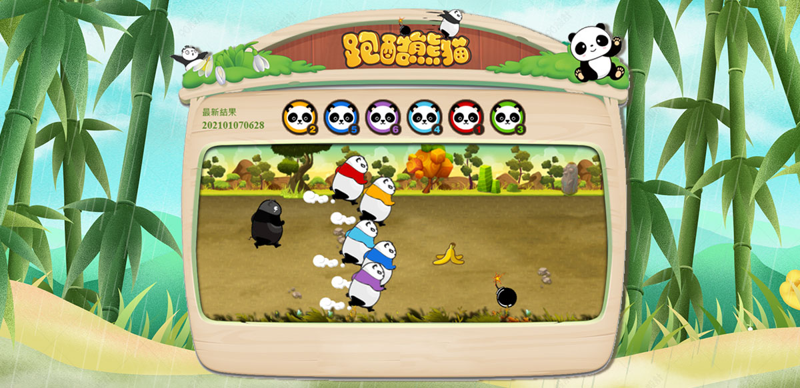
- 跑酷熊貓
- HTML5 相關遊戲。
- 使用Adobe Animate在HTML中建立canvas元素，並以 Node.js 以及 JavaScript 語法控制相關物件演示畫面。
- 上方頭像區會根據畫面，進行名次變更，以便於呈現最後賽果。
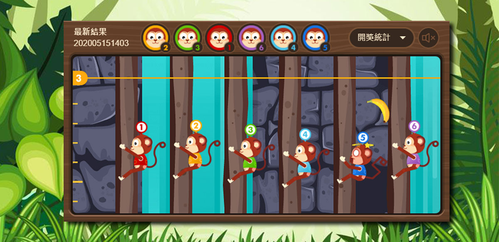
- BB猴子爬樹
- HTML5 相關遊戲。
- 參考BB猴子爬樹html遊戲練習製作，使用Adobe Animate在HTML中建立canvas元素，並以 Node.js 以及 JavaScript 語法控制相關物件演示畫面。
- 目前僅為靜態網頁，可使用網頁上按鈕做操控
- BB高低輪盤
- HTML5 相關遊戲。
- 參考BB高低輪盤html遊戲練習製作，利用 純CSS 以及 JQuery 呈現各種動畫效果。
- 目前僅為靜態網頁，可使用網頁上按鈕做操控
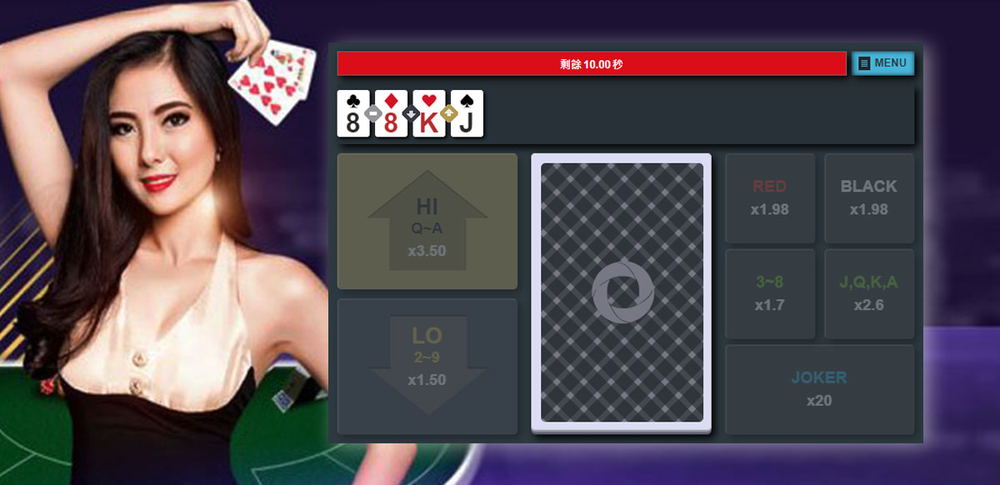
- HiLo Poker
- HTML5 相關遊戲。
- 撲克牌猜高低遊戲，利用 純CSS 以及 JQuery 呈現各種動畫效果。
- 目前僅為靜態網頁，可使用網頁上按鈕做操控
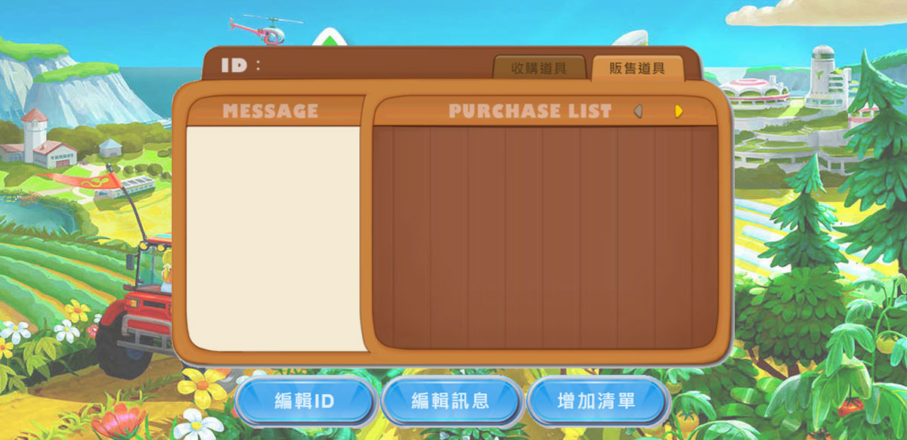
- RealFarm
- 純手刻RWD響應式網頁。
- 線上編輯該遊戲銷售清單網頁，並使用localStorage儲存使用者相關資料。
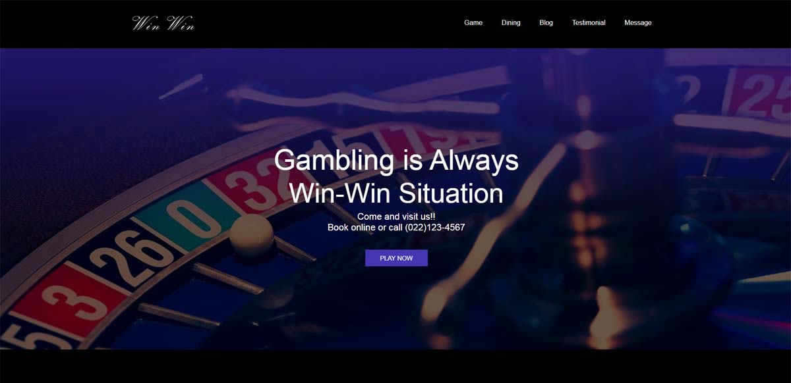
- 線上博弈入口網站
- 於資策會獨立開發的作品。
- 手刻RWD響應式網頁，利用 transform屬性將圖片做出各種動畫效果。
- 使用JavaScript語法製作捲軸輪播。
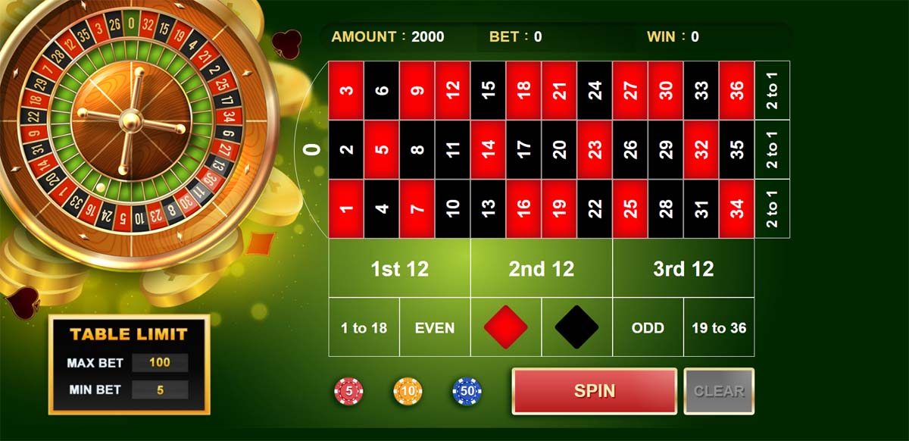
- 輪盤Roulette Casino(遊戲)
- 於資策會獨立開發的作品，網頁版輪盤遊戲。
- 參考真實賭場輪盤遊戲，以JavaScript監聽drop事件，判斷各別區塊籌碼疊加畫面，控制轉盤轉動，random亂數產生珠子落入的格子號碼，並判斷各下注區域賠率以及返回金額。
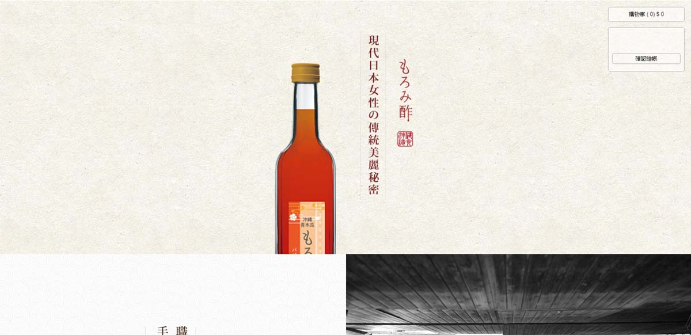
- 購物車網站
- 純手刻RWD響應式網頁。
- 使用JavaScript製作購物車功能，可將商品加入購物清單、刪除清單商品、顯示清單總數、總金額等功能。
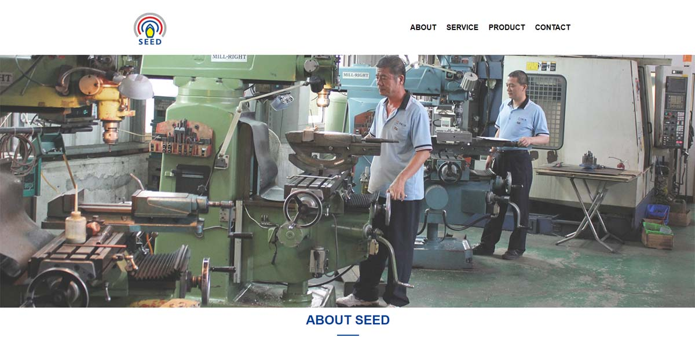
- 企業網站
- 純手刻RWD響應式網頁。
- iframe引進google地圖，使用JQuery 控制各區塊內容縮放，選單滑動、至頂按鈕滑動效果。
- 電影購票網站
- 純手刻RWD響應式網頁。
- 使用JQuery 控制選單滑動、至頂按鈕滑動效果、並且引用animate.css製作內文動畫。
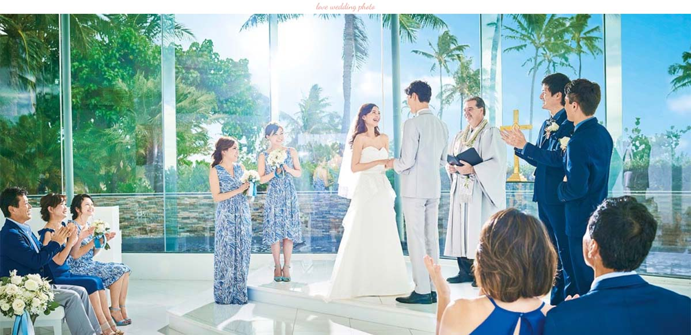
- 婚攝顧客滿意度調查
- 純手刻RWD響應式網頁。
- 使用JavaScript製作開頭圖片輪播，並以mouse事件，控制輪播暫停/啟動動作、選單滑動、至頂按鈕滑動效果。
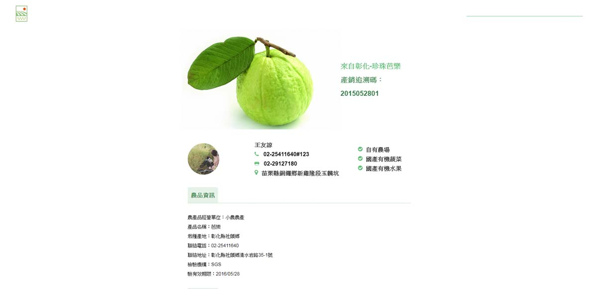
- 農產品介紹網站
- 純手刻RWD響應式網頁。
- 手刻RWD響應式網頁，使用JQuery 製作點擊小圖置換滿版圖片效果，並控制圖片捲軸位置。
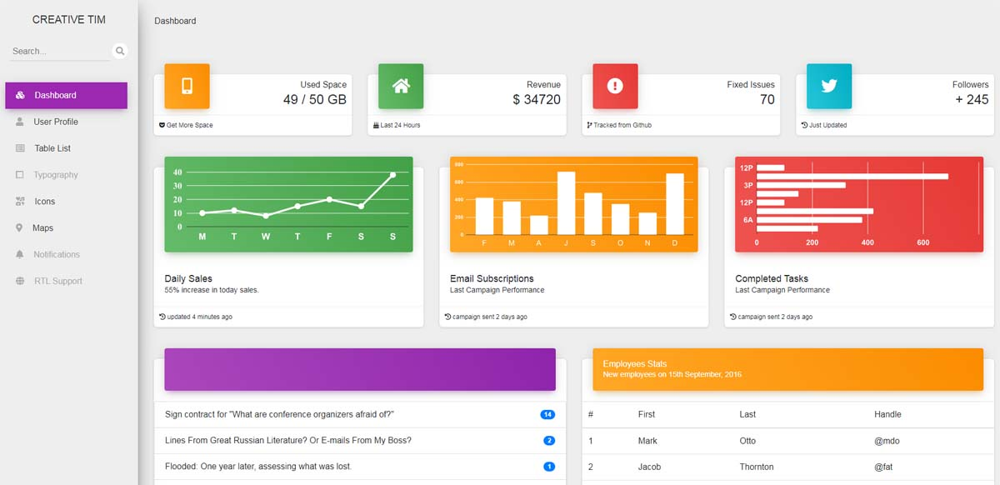
- 後台網站
- 使用Bootstrap快速套版製作
- 並使用JQuery加入些許動畫效果，內文方面則以iframe指定的html。
- 碰撞小遊戲
- random亂數取出陣列位置數值及障礙物圖片編號、並以X,Y相關座標，作為碰撞判斷的小遊戲。
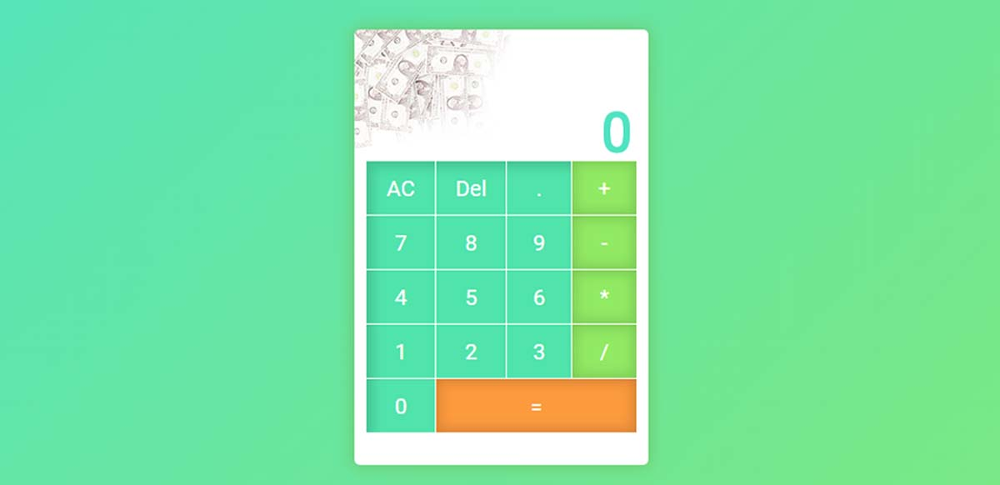
- 簡易小計算機
- 利用JavaScript四則運算、變數運用，實現簡易小計算機。